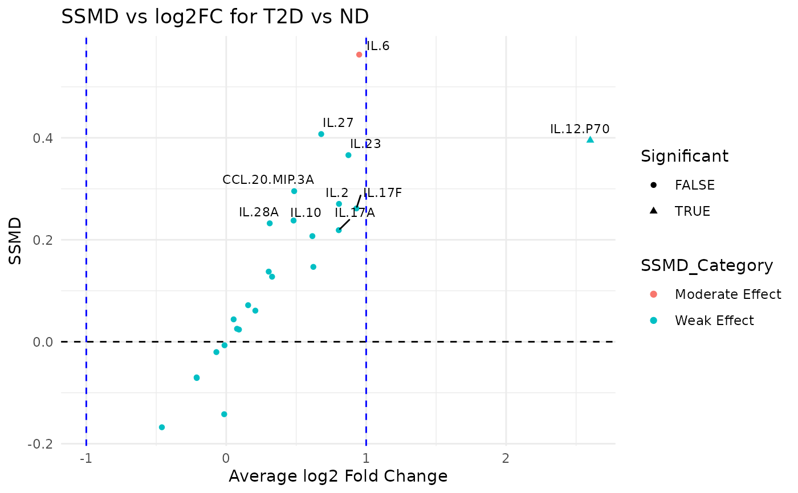

This function reshapes the input data and computes summary statistics (mean and variance) for each variable grouped by a specified grouping column. It then calculates the SSMD (Strictly Standardized Mean Difference) and log2 fold change between two groups (group1 and group2) and categorizes the effect strength. A dual flash plot is generated using ggplot2 where the x-axis represents the average log2 fold change and the y-axis represents the SSMD.
Usage
cyt_dualflashplot(
data,
group_var,
group1,
group2,
ssmd_thresh = 1,
log2fc_thresh = 1,
top_labels = 15,
output_file = NULL,
progress = NULL
)Arguments
- data
A data frame containing the input data.
- group_var
A string specifying the name of the grouping column in the data.
- group1
A string representing the name of the first group for comparison.
- group2
A string representing the name of the second group for comparison.
- ssmd_thresh
A numeric threshold for the SSMD value used to determine significance (default = 1).
- log2fc_thresh
A numeric threshold for the log2 fold change used to determine significance (default = 1).
- top_labels
An integer specifying the number of top variables (based on absolute SSMD) to label in the plot (default = 15).
- output_file
Optional. A file path to save the plot as a PDF (or PNG if extension is .png). If NULL (default), the function returns a ggplot object.
Value
If output_file is NULL, a ggplot object representing the dual-flash plot is returned; otherwise, the plot is saved to the specified file and the function returns NULL invisibly.
Examples
data_df <- ExampleData1[, -c(2:3)]
cyt_dualflashplot(
data_df,
group_var = "Group",
group1 = "T2D",
group2 = "ND",
ssmd_thresh = -0.2,
log2fc_thresh = 1,
top_labels = 10
)
#> $plot

#>
#> $stats
#> # A tibble: 10 × 11
#> cytokine mean_ND mean_PreT2D mean_T2D variance_ND variance_PreT2D
#> <chr> <dbl> <dbl> <dbl> <dbl> <dbl>
#> 1 CCL.20.MIP.3A 634. 404. 887. 6.72e+5 2.74e+5
#> 2 IL.10 979. 836. 1366. 1.99e+6 1.19e+6
#> 3 IL.12.P70 13.0 39.1 78.9 4.15e+2 2.56e+4
#> 4 IL.17A 352. 653. 615. 9.40e+5 2.88e+6
#> 5 IL.17F 1.63 2.35 3.11 1.56e+1 3.37e+1
#> 6 IL.2 9227. 10718. 16129. 2.60e+8 4.10e+8
#> 7 IL.23 0.147 0.243 0.269 3.13e-2 9.37e-2
#> 8 IL.27 0.0662 0.0834 0.106 6.18e-3 5.66e-3
#> 9 IL.28A 0.0537 0.0710 0.0666 2.45e-3 5.10e-3
#> 10 IL.6 4620. 5197. 8925. 2.86e+7 5.72e+7
#> # ℹ 5 more variables: variance_T2D <dbl>, ssmd <dbl>, log2FC <dbl>,
#> # SSMD_Category <chr>, Significant <lgl>
#>